密集行人过街 · 路口下载 MP4
密集行人过街 · 路口下载 MP4验证例 20
2026-11-21 11:24（北京时间）已收录 30 / 70 条。
Transfer 长尾 10/10 · Transfer 验证 20/20 · V3 验证 0/20 · 完整前视验证 0/20
Transfer 2.5 · 密集行人过街 · 路口
dense_pedestrian_crosswalk_002上方为生成，下方为同帧 HDMap 与目标框控制。两组画面均按左前、前、右前／左后、后、右后排列。
Transfer 与控制 V3 首段六路无首帧，续段以各自上一段的末帧衔接。第 29 帧为 A29，下一帧为 B2。视频按 10 fps 播放。
输入文本
The video shows a realistic front-facing autonomous driving scene on a marked urban road in daylight. A clearly marked zebra crosswalk spans the roadway ahead, with sidewalks, curbs, lane markings, traffic signs, roadside buildings, and normal surrounding vehicles visible in the background. A large but naturally distributed group of pedestrians enters the zebra crossing from both sides and crosses in front of the ego vehicle. The pedestrians are individually spaced rather than standing shoulder to shoulder, and they move at slightly different speeds and depths across the crosswalk, with some already crossing and others just beginning. The ego vehicle approaches the occupied crosswalk and faces a realistic dense pedestrian crossing hazard that requires slowing or stopping.
Transfer 长尾场景
 密集行人过街 · 大道
密集行人过街 · 大道 转弯鬼探头 · 行人后退
转弯鬼探头 · 行人后退Transfer 验证集
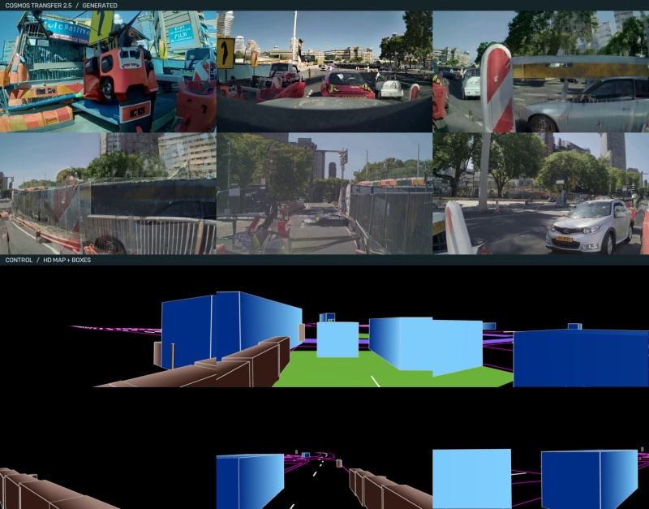
验证例 1下载 MP4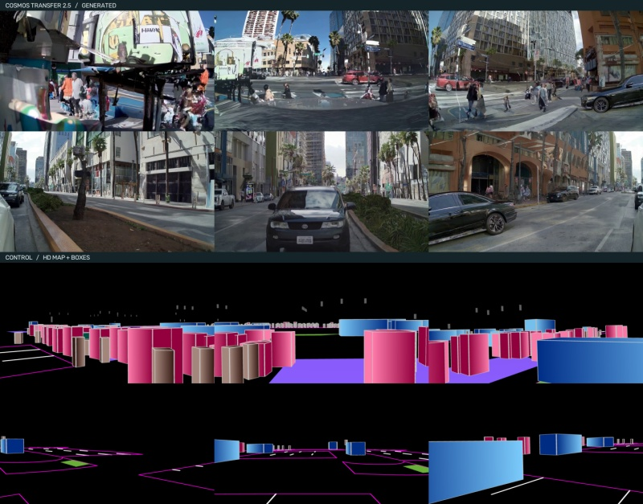
验证例 2下载 MP4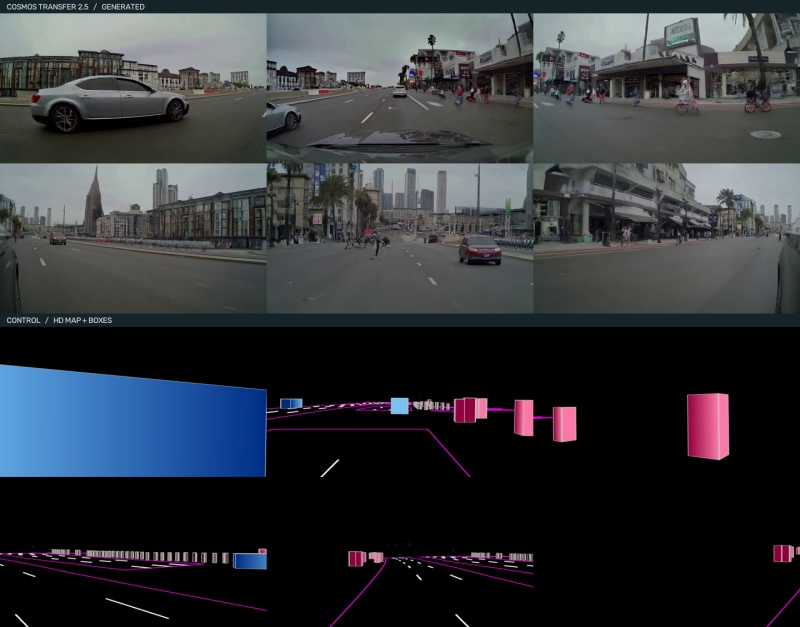
验证例 3下载 MP4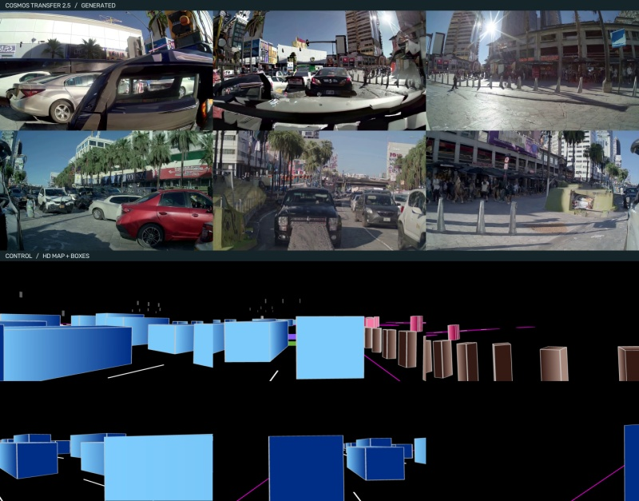
验证例 4下载 MP4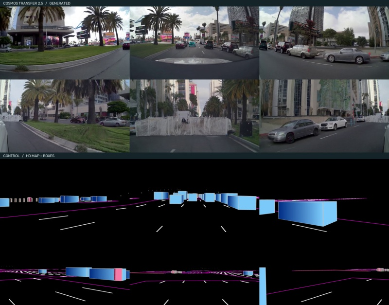
验证例 5下载 MP4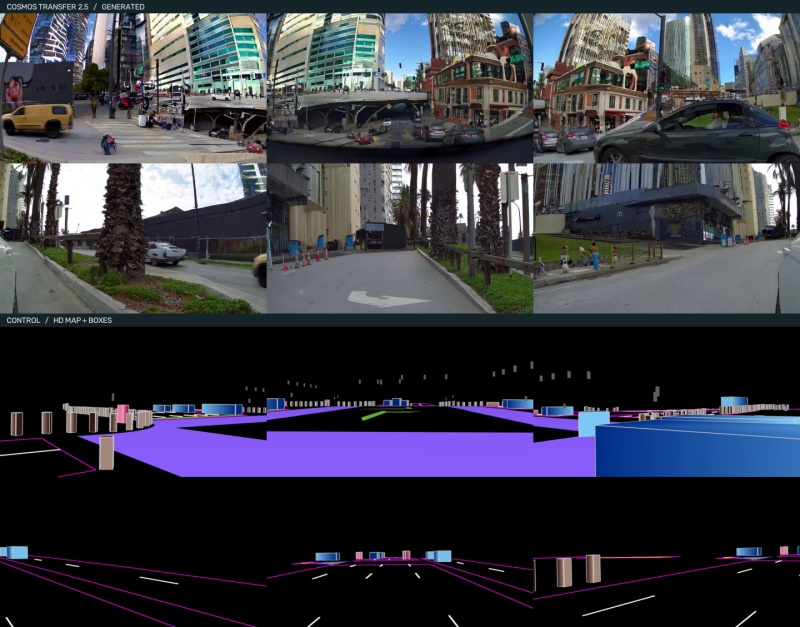
验证例 6下载 MP4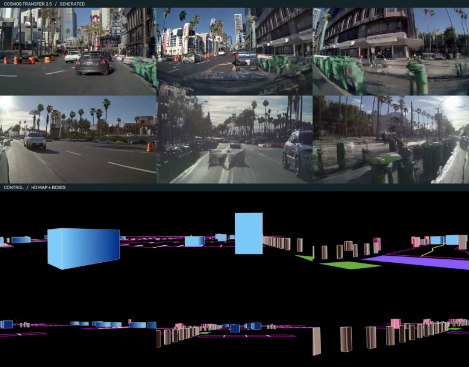
验证例 7下载 MP4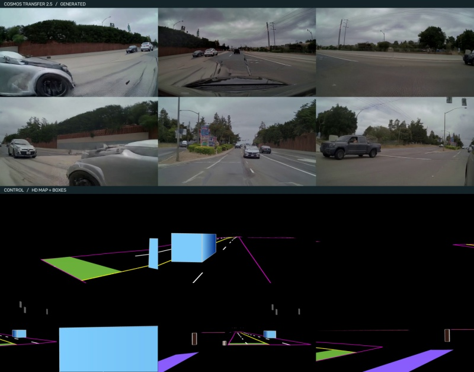
验证例 8下载 MP4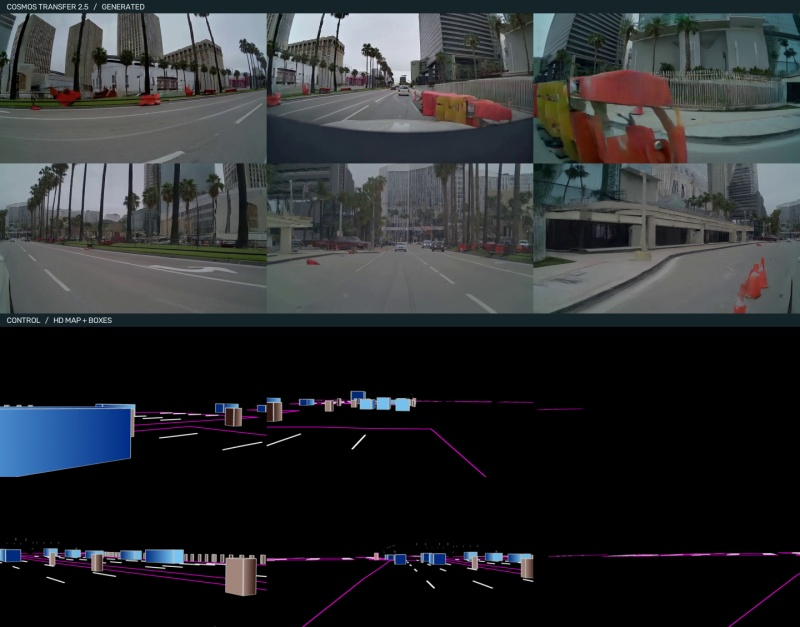
验证例 9下载 MP4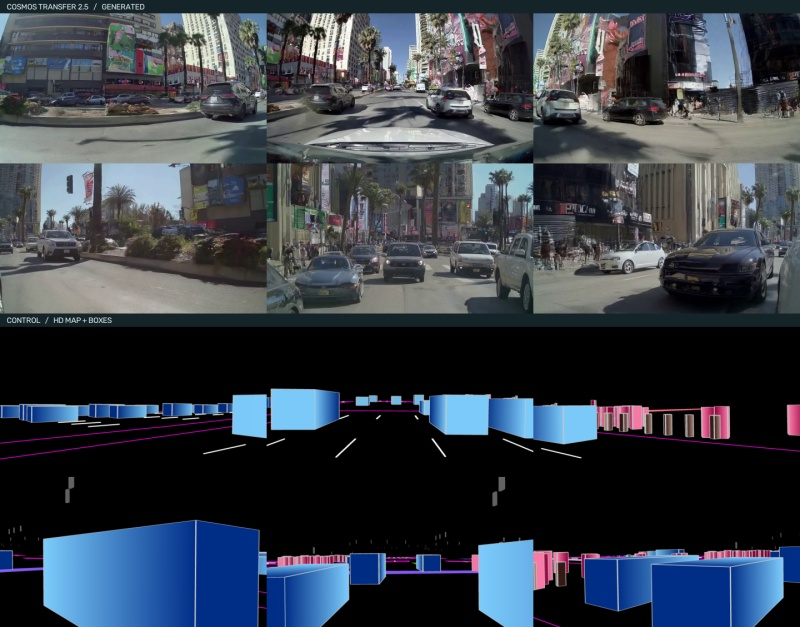
验证例 10下载 MP4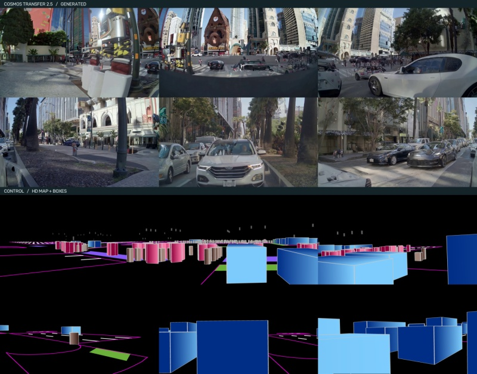
验证例 11下载 MP4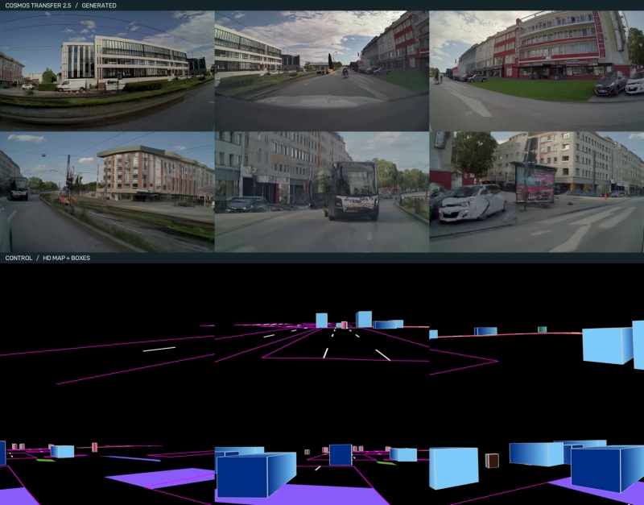
验证例 12下载 MP4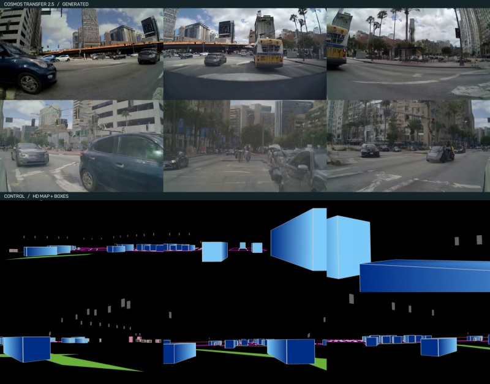
验证例 13下载 MP4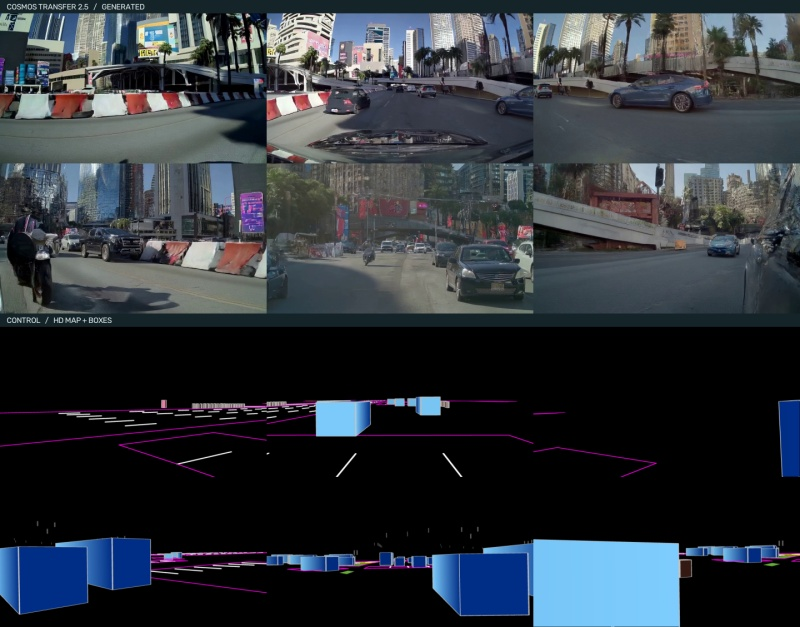
验证例 14下载 MP4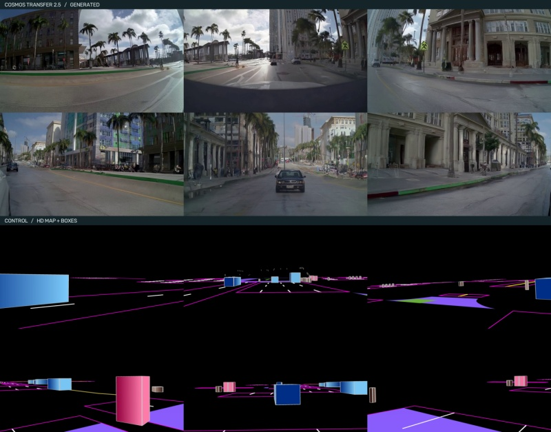
验证例 15下载 MP4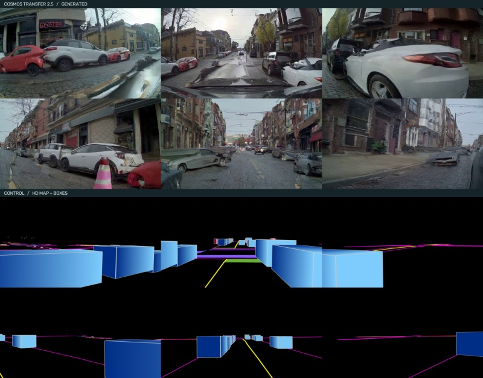
验证例 16下载 MP4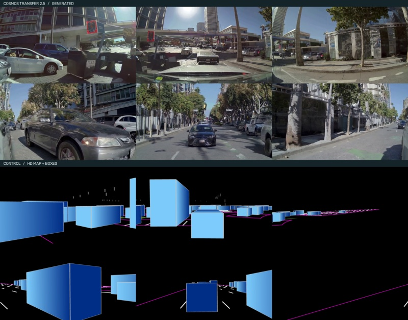
验证例 17下载 MP4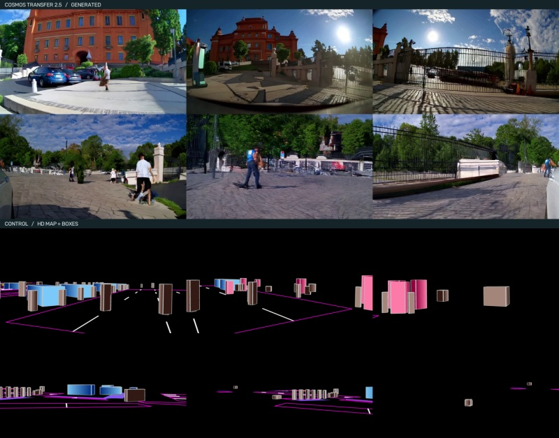
验证例 18下载 MP4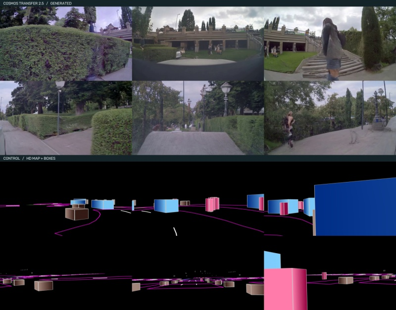
验证例 19下载 MP4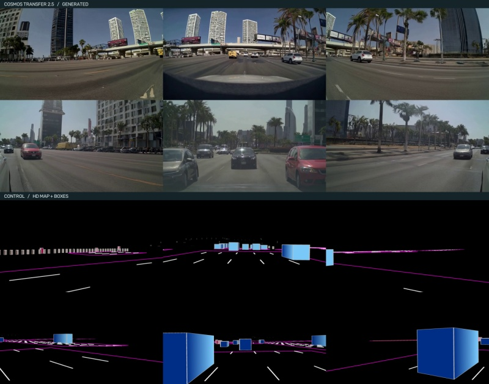
验证例 20下载 MP4